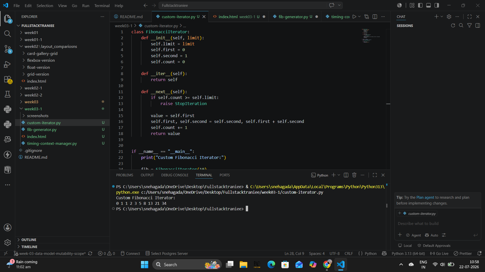
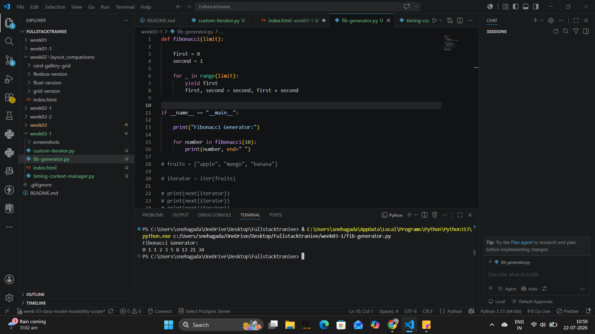
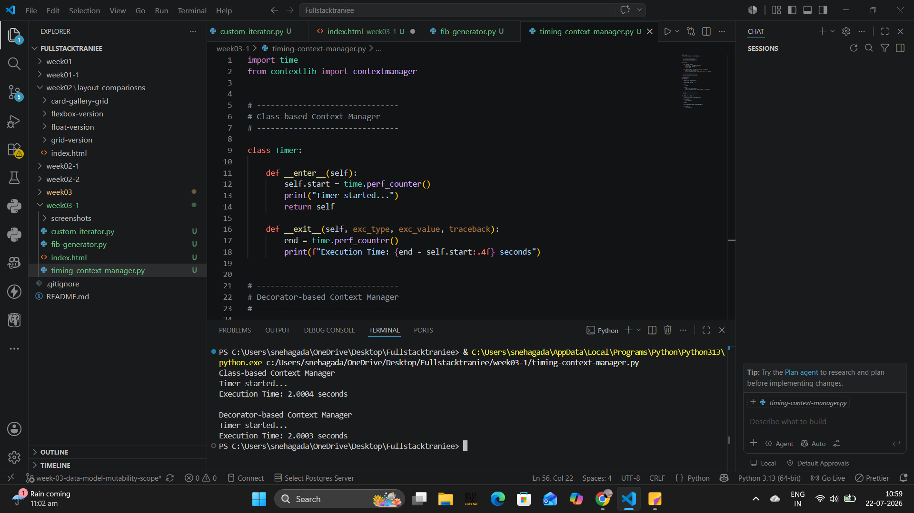

Iterators, Generators & Context Managers Assignment Outputs

Demonstrates a custom Fibonacci iterator implemented using the iterator protocol (__iter__ and __next__).
View Output
Demonstrates generating Fibonacci numbers
using a generator function and the
yield keyword.

Demonstrates class-based and decorator-based context managers for measuring execution time.
View Output